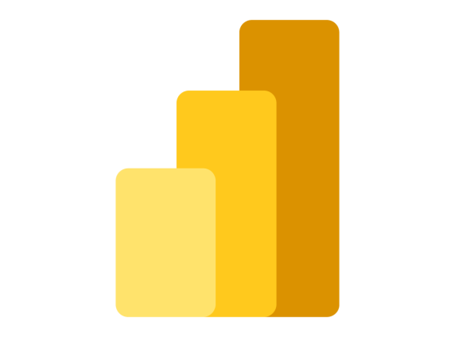

Plataformas e Engenharia de Dados
Pipelines de dados ponta a ponta, integrando multiplas fontes atraves de arquiteturas ETL/ELT, ambientes Lakehouse e plataformas modernas.
Cientista de Dados com mais de 9 anos de experiencia transformando dados complexos em solucoes escalaveis e orientadas ao negocio. Especialista em BI, Python, SQL, Microsoft Fabric, Databricks, ETL/ELT, Machine Learning e desenvolvimento de dashboards.
Saiba MaisProfissional de Dados com mais de 8 anos de experiencia desenvolvendo solucoes completas em Business Intelligence, Engenharia de Dados, Analytics e Ciencia de Dados. O foco do trabalho esta na transformacao de dados complexos em solucoes confiaveis, escalaveis e orientadas ao negocio, apoiando decisoes estrategicas.
Experiencia pratica em todo o ciclo de vida dos dados — desde a extracao, integracao (ETL/ELT) e modelagem ate automacao, visualizacao, governanca e Machine Learning.
Com formacao em Ciencia de Dados e Engenharia Civil, combina pensamento analitico, resolucao estruturada de problemas e uma forte visao de negocios.
Da pesquisa a producao em tempo real — resolvendo problemas com dados.
Pipelines de dados ponta a ponta, integrando multiplas fontes atraves de arquiteturas ETL/ELT, ambientes Lakehouse e plataformas modernas.
Ecossistemas analiticos com Power BI, Qlik Sense, Tableau e modelos semanticos, proporcionando metricas confiaveis e insights acionaveis.
Solucoes preditivas para analise de risco, comportamento de clientes, modelos de propensao e otimizacao operacional com Machine Learning.
Solucoes baseadas em LLMs, arquiteturas RAG, Agentes de IA, engenharia de prompts e plataformas de automacao inteligente.
Praticas de governanca focadas em qualidade, linhagem, documentacao, responsabilidade e confiabilidade das informacoes.
Lideranca de iniciativas, mentoria tecnica, definicao de arquiteturas e transformacao de desafios complexos em solucoes escalaveis.

Dashboard estrategico desenvolvido para analise de indicadores, performance e apoio a tomada de decisao.
Ver Projeto →
Modelos preditivos desenvolvidos com Python e algoritmos de Machine Learning para reconhecimento de padroes e previsao.
Ver Projeto →Vamos conversar sobre como posso ajudar com seus desafios de dados.